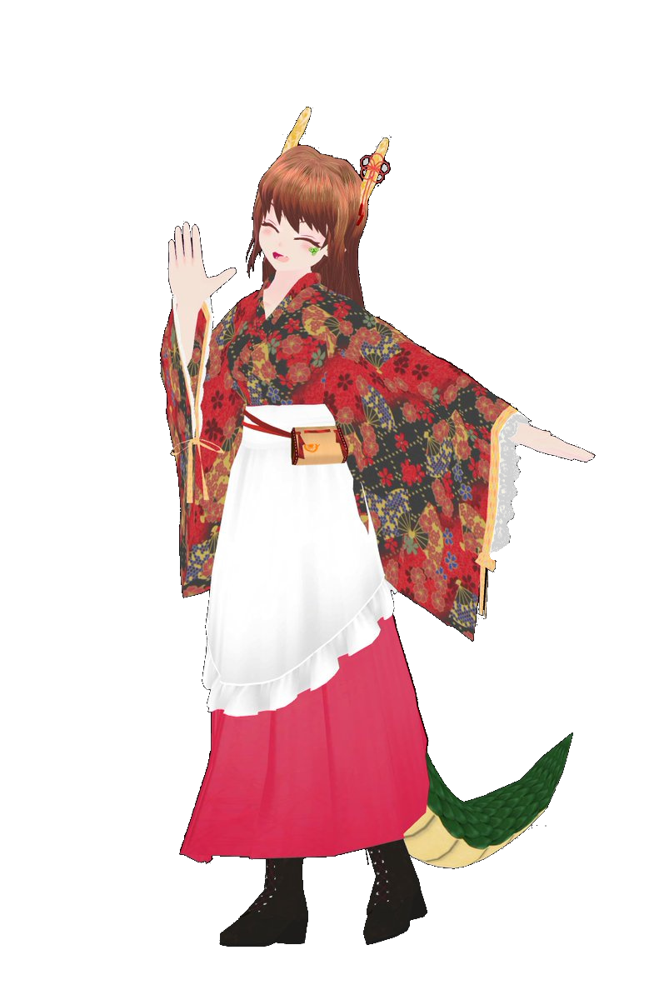

経歴
- 2018/04 東京大学理科一類 入学
- 2022/03 東京大学航空宇宙工学科 卒業
- (指導教員: 水口周)
- 2024/03 東京大学学際情報学府 先端表現情報学コース 修士課程 修了
- (最優秀修士論文・学府長賞) (指導教員: 稲見昌彦)
- 2024/04 同 博士課程 進学
- 航空宇宙工学(学士)
- 学際情報学(修士)
- 2021/10 - 2022/03 東京大学稲見研究室 “Unconventional Body Project” リサーチアルバイト
- 2024/04 – 2024/10 Sony CSL Kyoto リサーチアシスタント
- 2024/09 – 2024/12 Internship at Saarland University HCI Lab (指導: Jürgen Steimle)
Skills
- Advanced : 3D modeling (blender), Unity (VR), Body Tracking, Haptics
- Intermediate : Machine Learning, CG Animation, Space Enginnering
- Begineer : Web (html, css), AWS, Docker
Research Interests
- Non-Humanoid Avatar, Human Augmentation, User-Created Avatar Cultures, Virtual Reality, Human Computer Interaction, Space Engineering
Research Achievements
Journal Papers
- 1. 高下修聡, 水口周, 北本和也(2022), Physics-Informed Neural Networkを用いた複合材厚み方向吸湿率分布の推定,日本複合材料学会誌, Vol. 48, No. 2, pp. 63-69.
- 2. 高下修聡, 荒井謙, 齋藤寛人, 稲見昌彦(2022), Kinematic Altering Illusion:タコ腕型VRアバタの装用による柔らかい身体感の獲得, 日本バーチャルリアリティ学会論文誌,Vol.27, No.4, pp.403-412.
Conference Papers
- 1. Shuto Takashita, Jürgen Steimle, Masahiko Inami, Imaginary Joint: Proprioceptive Feedback for Virtual Body Extensions via Skin Stretch, ACM UIST 2025
- 2. Shuto Takashita, Ken Arai, Hiroto Saito, Michiteru Kitazaki, Masahiko Inami, Embodied Tentacle: Mapping Design to Control of Non-Analogous Body Parts with the Human Body, ACM CHI 2024
Poster / Oral Presentation
- 1. Shuto Takashita, Taiga Suzuki, Naoki Tanaka, Masahiko Inami, Editable Body: Interactive Adaptation of Avatar Control Schemes and Body Structures, IEEE VR 2025 Poster
- 2. Kazuki Toma, Shuto Takashita, Shinnichi Nakasuka (2023), Design of Space Music Hall as a Module of Low Earth Orbit Space Station, ICES2023
- 3. Shuto Takashita, Shu Minakuchi, Kazuya Kitamoto (2022), Estimation of Through-Thickness Moisture Distribution in Composite Materials Using Physics-Informed Neural Network, JCCM13
- 4. 中根敦久, 高下修聡 (2024), 移動型ロボットアームによる3Dスキャンデータへの物理特性の付加, VRSJ29
Demonstration
- 1. Shuto Takashita, Jürgen Steimle, Masahiko Inami (2025), Imaginary Joints and Muscles: Torque-based Proprioceptive Illusions for Extended Body Parts via Skin Stretch Feedback, SIGGRAPH Emerging Technologies
- 2. Shuto Takashita, Naoki Tanaka, Taiga Suzuki (2023), Mechanical Brain Hacking: A VR Cybernetics Simulator for Body Editing, SIGGRAPH2023 Immersive Pavilion
- 3. Shuto Takashita, Amane Yamaguchi, Takuji Narumi, Inami Masahiko (2023), AvatarForge: A Real-Time and Node-Based Body Editing System, SIGGRAPH Asia 2023
- 4. Shuto Takashita, Naoki Tanaka, Taiga Suzuki (2022), Mechanical Brain Hacking, ICAT-EGVE2022
- 5. Shuto Takashita, Naoki Tanaka, Taiga Suzuki (2023), Mechanical Brain Hacking, Laval Virtual 2022
- 6. 高下修聡,田中尚輝,鈴木大河(2022), Mechanical Brain Hacking, VRSJ27
Peer Review Experience
- ACM Augmented Humans (AH)
- IEEE International Symposium on Mixed and Augmented Reality (ISMAR)
- ACM SIGGRAPH Asia XR
- ACM SIGGRAPH Asia Emerging Technologies
- ACM UIST
受賞歴 Awards
- 1. 高下修聡 (2024), 非人型アバターを用いた人の身体表象・能力への介入に関する研究, 東京大学学際情報学府 最優秀修士論文賞
- 2. 高下修聡, 田中尚輝, 鈴木大河 (2024), Mechanical Brain Hacking, XR Creative Award 大賞 (107作品中1位)
- 3. 高下修聡, 田中尚輝, 鈴木大河 (2022), Mechanical Brain Hacking:ロボットアバタを用いた 自らの脳改造・身体システム改造体験, IVRC2022 Laval Virtual Prize, ICAT-EGVE Special Prize, VR学会賞, Unity賞, ソリッドレイ賞, XR Kaigi招待展示賞
- 4. 高下修聡, 田中尚輝, 鈴木大河 (2023), Mechanical Brain Hacking, Innovative Technologies 2023
- 5. 高下修聡, 田中尚輝, 鈴木大河 (2022), Mechanical Brain Hacking, 第28回学生CGコンテスト Silver Prize (404 作品中上位 7 作品)
- 6. 藤間一輝, 高下修聡, 岩瀬すみれ (2022), 宇宙音楽ホールの設計図, 第28回学生CGコンテスト Finalist (404 作品中上位26作品)
- 7. 旭博佑, 高下修聡, 齊藤寛人, 前川和純, 門内靖明, 稲見昌彦 (2024), 身体運動周期を用いた没入型ロコモーションインターフェースの検討, 第 71 回 EC 研究会 デモ奨励賞第 1位 (13 件中 1 位)
- 8. 高下修聡, 小山髙 (2020), マドカノ, JPHACKS2020 Special Jury Award, 株式会社バンダイナムコ賞
- 9. 中村昂平、高下修聡、徐一博、前田結衣 (2023), 卓球マスターVR, イマクリエイト社 第一回ファンクリエイト 優勝
- 10. 高下修聡 (2025), 第5回GCLSプレゼンコンペティション 審査員特別賞 —「身体化から変身へ：メタバースのアバター文化を起点とする非ヒト型身体の社会的・工学的設計論」
- 11. 高下修聡 (2025), Iwaken Lab. 大LT祭 2025 ルームB ベストLT賞 — 「身体化から変身へ：メタバースのアバター文化を起点とする非ヒト型身体の社会的・工学的設計論」
- 12. 高下修聡 (2025), IIS PhD Student Live 2025, Second Prize — "Plural Embodiment: How Can We 'Cherry-Pick' the Advantages of Multiple Bodies?"
競争的資金の獲得
- 1. 東京大学「未来社会協創」 国際卓越大学院 RA(2022年度~)
- 2. 日本学術振興会 特別研究員DC1(2024年度~)
- 3. ACT-X 「次世代AI・数理情報」 採択 (2025年度) — 『無意識動作のAIへの委譲による拡張身体の操作』
- 4. 電気通信普及財団 海外渡航旅費援助 (2025年度)
- 5. 情報科学国際交流財団 研究者海外派遣助成 (2023年度)
その他(展示・メディア掲載)
- 1. XR Kaigi 2022 展示
- 2. 子供の科学「カラダを増やす最新研究！」掲載
- 3. someone「あなたの歩く一歩先」掲載
- 4. 東京大学メディアコンテンツ教育プログラム 修了
- 5. SIGGRAPH 2023 “CG in Japan” セッショントーク